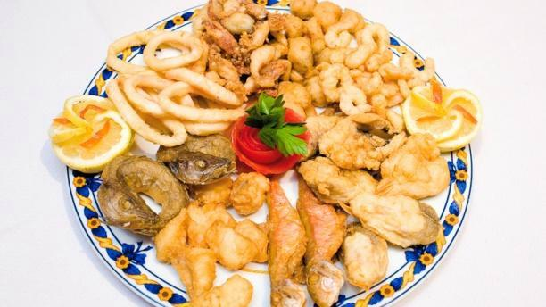
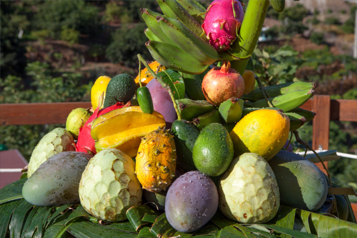
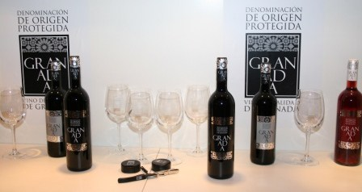

Save The Plants


Gastronomía en la Costa
La costa de la actual Costa Tropical de Granada, una región con milenios de historia antigua, ha contemplado desde la Antigüedad el desembarco en estas idílicas playas (hoy convertidas en una de sus principales atracciones turísticas) de numerosas civilizaciones que han dejado su huella. Los restos arqueológicos encontrados, Necrópolis fenicia, numerosas atalayas o castillos desde los que se contemplan los huertos y las culturas en terrazas.
Pescado y Marisco
La cocina de esta región debe mucho a la gran variedad de pescado fresco y mariscos con los que, siglo tras siglo, el Mediterráneo ha proporcionado su diferentes lugares. En sus populosos mercados se pueden encontrar los camarones, langostinos y cangrejos tan típicos de la zona, así como todo tipo de peces. De lo más común como el pescado, pargo, besugo, besugo y lubina, a otros más los inusuales como congrios, meros o rayas que se preparan en restaurantes de variadas y exquisitas formas. Fenicios, romanos, griegos y musulmanes han dejado su huella en Granada costa. De las técnicas de salazón, introducidas por los fenicios y mejorado por los romanos, al amor por el huerto y el vegetales que los musulmanes heredaron de los griegos, mestizaje cultural ha dado forma a la gastronomía de estas costas. La popular sopa de zalamandroña es un buen ejemplo de esto
Frutas Tropicales
De América, junto con alimentos como papas, pimientos o tomates, también vino de la mano de los primeros exploradores españoles, especies de frutas tropicales. Los climas similares de la costa de Granada ha permitido plantaciones de productos tropicales para dar fruto en esta área, abundando mango, níspero, guayaba, aguacate y plantaciones de chirimoyas y recetas que mezclan estos sabores con más productos tradicionales.
Vino Costero
Albuñol también produce "Vino Costero", mientras que la pequeña Bodega Horacio Calvente,ubicado en Jete pero con sus viñedos en la Sierra de Cázulas, produce tintos y blancos de alta calidad. El ron de caña que se elabora en Motril es un gran digestivo para terminar la mesa.
